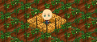
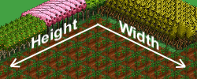
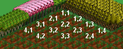

FarmVille Trainer è un applicativo sviluppato per agevolare le operazioni frequenti per l'applicativo Facebook FarmVille.
FarmVille Trainer è composto da 3 pratici strumenti: il Farmer Robot, l'Hay Bale Trick ed il Plow-Seed-Delete Trick.
Questo strumento è un valido aiuto per le operazioni di mietitura, dissodatura e semina del campo.
Per usare questo strumento i passi da seguire sono i seguenti:
Da questo momento il processo si avvia in automatico dopo 5 secondi di inattività del mouse, per cui le operazioni che seguono possono essere eseguite con calma, purché il mouse venga tenuto in movimento.
Il processo inizia in automatico. Se sono state selezionate più operazioni (es. dissodatura e semina) il programma attenderà che la prima sia terminata prima di iniziare quella successiva.
Il processo può essere interrotto in ogni istante muovendo il mouse o passando all'applicazione FarmiVille Trainer.
Il trucco delle balle di fieno è un espediente per guadagnare rapidamente esperienza acquistando e rivendendo balle di fieno. Il rapporto di guadagno dei punti esperienza corrisponde ad 1 punto ogni 19 monete. Non è il sistema più vantaggioso ma è il più veloce.
Per usare questo strumento i passi da seguire sono i seguenti:
Da questo momento il processo si avvia in automatico dopo 5 secondi di inattività del mouse, per cui le operazioni che seguono possono essere eseguite con calma, purché il mouse venga tenuto in movimento.
Il processo inizia in automatico e va avanti indefinitamente finché non viene interrotto.
Il processo può essere interrotto in ogni istante muovendo il mouse o passando all'applicazione FarmiVille Trainer.
Il trucco del "dissoda-semina-cancella" permette di aumentare i punti esperienza in modo estremamente conveniente, con un rapporto di guadagno pari ad 1 punto ogni 10 monete. E' il sistema più conveniente.
Per usare questo strumento i passi da seguire sono i seguenti:
Da questo momento il processo si avvia in automatico dopo 5 secondi di inattività del mouse, per cui le operazioni che seguono possono essere eseguite con calma, purché il mouse venga tenuto in movimento.
Il processo inizia in automatico e va avanti indefinitamente finché non viene interrotto.
Il processo può essere interrotto in ogni istante muovendo il mouse o passando all'applicazione FarmiVille Trainer.
Per velocizzare il processo di mietitura, dissodamento e semina e per evitare che l'avatar interferisca col corretto funzionamento del programma, si consiglia di adottare la tecnica che consiste nel bloccare l'avatar.
Per il corretto funzionamento, durante tutta l'attività di FarmVille Trainer la modalità di visualizzazione di FarmVille dovrà essere a schermo intero.
FarmVille Trainer non è attualmente in grado di intercettare finestre non desiderate, per cui è opportuno controllare di tanto in tanto lo stato di andamento del programma, specialmente nei casi di operazioni continue come l'Hay Bale Trick ed il Plow-Seed-Delete Trick.
L'avatar è il simpatico contadino che scorazza per il campo mietendo, dissodando e seminando all'impazzata.
Per velocizzare FarmVille ma soprattutto per non essere di intralcio a FarmVille Trainer, è opportuno bloccare l'avatar tra 4 oggetti, come ad esempio 4 balle di fieno.
E' pratica comune bloccare l'avatar al centro del campo, nella stessa posizione dove esso compare al caricamento del gioco, in modo da non doverlo bloccare intenzionalmente ogni volta.
Le esclusioni sono un insieme di caselle sulle quale il programma non andrà agire. Queste caselle possono essere ad esempio occupate da elementi decorativi o dall'avatar. Le esclusioni vengono specificate da coppie di valori separati da virgola rappresentanti la coordinata secondo la larghezza (Width) e l'altezza (Height) dell'area dove agire. Ad esempio se nelle esclusioni viene specificato "1,3" verrà saltata la prima casella della terza riga. E' possibile specificare più di una eccezione separando le varie coppie di valori dal carattere "|", ad esempio "1,3|1,4|2,3|2,4"
Questa operazione marca per la mietitura una casella di terreno occupata da un frutto maturo.
Dopo la mietitura il terreno è pronto per essere dissodato (Plow).
Rappresenta l'altezza della porzione interessata, ossia la dimensione in termine di caselle secondo l'asse che parte da Nord-Est verso Sud-Ovest.
 Questa operazione marca per la dissodatura un'area di terreno vuota o un'area di terreno dove è stato raccolto un frutto maturo (fallow land).
Dopo la dissodatura il terreno è pronto per essere seminato (Seed).
La modalità Schermo Intero permette di visualizzare FarmVille a tutto schermo.
Questa operazione marca per la semina un'area di terreno dissodato (plowed land).
Dopo la semina è necessario attendere due o più ore prima di poter raccogliere il frutto maturo.
Rappresenta la larghezza della porzione interessata, ossia la dimensione in termine di caselle secondo l'asse che parte da Nord-Ovest verso Sud-Est.
Impostare lo zoom al massimo significa ingrandire il più possibile il terreno di gioco in modo da vedere gli oggetti più grandi. L'effetto si ottiene premendo almeno 3 volte il tasto di ingrandimento.
Impostare lo zoom al minimo significa rimpiccolire il più possibile il terreno di gioco in modo da vedere gli oggetti più piccoli. L'effetto si ottiene premendo almeno 3 volte il tasto di rimpiccolimento.